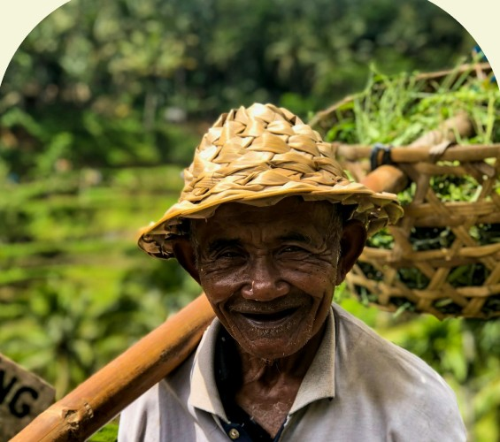

Karakter yang hidup
Aroma nangka matang, kakao, rempah hangat, dan keasaman lembut yang menyegarkan.
Kopi Excelsa Wonosalam
Secangkir kopi langka dari lereng Wonosalam—dipetik dalam batch terbatas, disangrai dengan cermat, dan dihadirkan untuk mereka yang menghargai asal.
Kopi Nusantara, dari Petani untuk Dunia.

Dari kebun ke cangkirmu
Di lereng hijau Jombang, kopi Excelsa tumbuh perlahan di antara pepohonan tropis. Varietas langka ini dikenal dengan karakter buah yang khas, aroma kompleks, dan aftertaste panjang yang tak mudah dilupakan.
Onthel hadir untuk membawa hasil terbaik petani Wonosalam lebih dekat kepadamu. Setiap pembelian membantu menciptakan rantai nilai yang lebih adil, menjaga pengetahuan lokal, dan memastikan kebun-kebun ini terus bertumbuh.
Aroma nangka matang, kakao, rempah hangat, dan keasaman lembut yang menyegarkan.
Berasal dari kebun dan petani yang jelas, diproses dalam batch kecil yang dapat ditelusuri.
Medium roast untuk menjaga karakter asli Excelsa tetap seimbang di setiap seduhan.